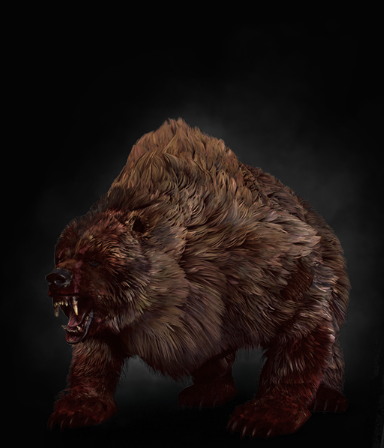

|  |
Bestiary Description:Now finish your soup, or a berserk'll come and swallow ye whole. -Skellige mother scolding a child.
Skellige legends speak of men known as berserkers who transform into bears when overwhelmed by battle rage. In doing so, they lose all self-awareness and are driven by a boodlust which they must satiate in order to return to human form. Few believe these blood-curdling tales, however, not even in Skellige, where the inhabitants usually treat even the least probable legends with the utmost gravity. This indicates either that berserkers are in fact mere figments of mead-sodden imaginations,or else that they have learned to hide their abilities from the rest of the islanders.
The skalds' ballads indicate a berserker transformed in the heat of battle cannot be distinguished from a true-born bear. Only minute anatomical details - such as the shape of their tongues and teeth - reveal their secret. Descriptions of their fighting prowess paint them as invulnerable to pain and able to heal any wound recieved almost at once.
If these men-turned-bears truly do exist, one can suppose that, like werewolves and lycanthropes, they are particularly vulnerable to oils that harm cursed creatures. But if we are to give credence to ancient songs about these creatures' deeeds, about the mass murders and massacres they have committed, we can only hope that no witcher will have to test this hypothesis. |